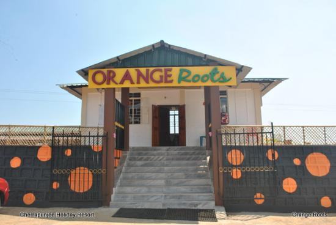
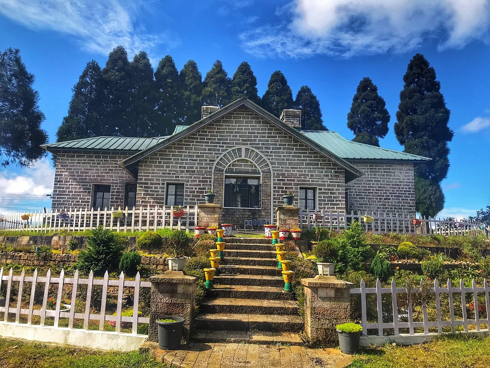
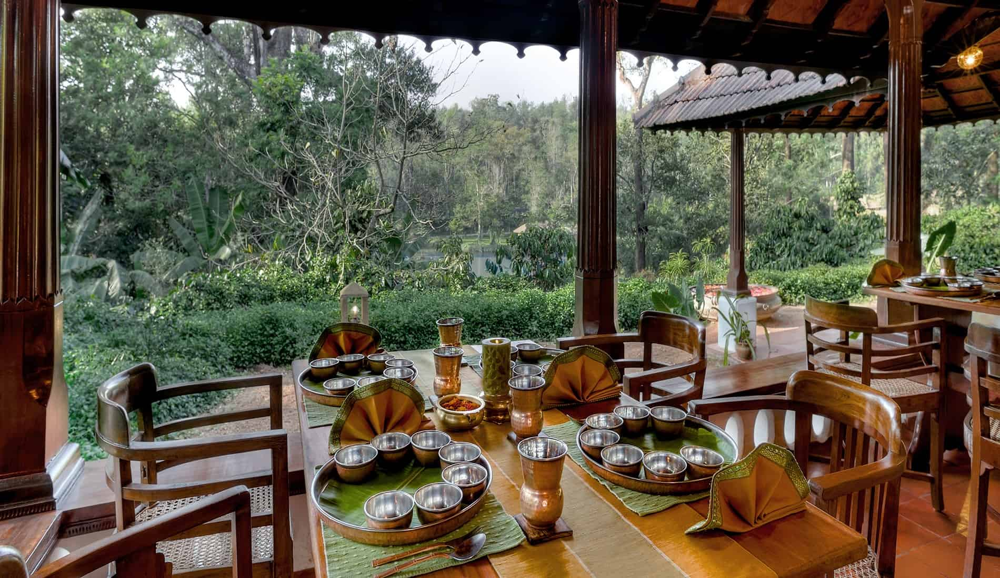

Restaurants

Orange Roots Restaurant
Orange Roots Restaurant in Cherrapunji is a popular eatery known for its delicious local Khasi cuisine and stunning views of the surrounding landscapes.
Location
Avron Restaurant
Avron Restaurant in Cherrapunji is a cozy spot celebrated for its diverse menu featuring both local and international dishes.
Location

Cafe Cherrapunjee
Cafe Chiranpunjee in Cherrapunji is a charming café known for its delightful ambiance and a menu that blends local flavors with popular café fare.
Location

The East End Hotel
The End Hotel in Cherrapunji offers comfortable accommodations with scenic views, providing a relaxing stay amidst the natural beauty of the region.
Location
Rain Cafe
Rain Cafe in Cherrapunji offers a cozy retreat amidst the misty hills, known for its warm ambiance and delightful local delicacies.
Location